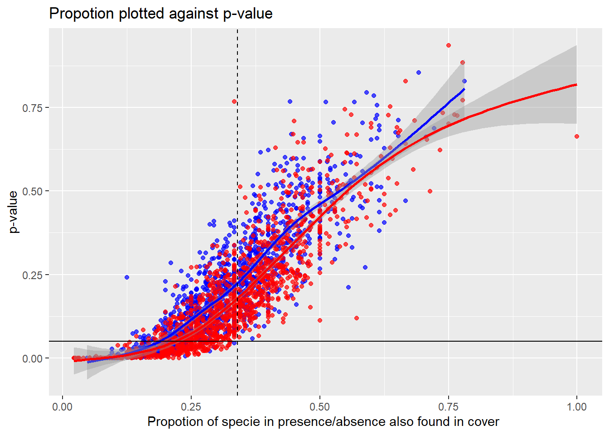

Model validation
Last updated: 2021-04-19
Checks: 6 1
Knit directory: DataProject - model validation/
This reproducible R Markdown analysis was created with workflowr (version 1.6.2). The Checks tab describes the reproducibility checks that were applied when the results were created. The Past versions tab lists the development history.
The R Markdown file has unstaged changes. To know which version of the R Markdown file created these results, you’ll want to first commit it to the Git repo. If you’re still working on the analysis, you can ignore this warning. When you’re finished, you can run wflow_publish to commit the R Markdown file and build the HTML.
Great job! The global environment was empty. Objects defined in the global environment can affect the analysis in your R Markdown file in unknown ways. For reproduciblity it’s best to always run the code in an empty environment.
The command set.seed(20210322) was run prior to running the code in the R Markdown file. Setting a seed ensures that any results that rely on randomness, e.g. subsampling or permutations, are reproducible.
Great job! Recording the operating system, R version, and package versions is critical for reproducibility.
Nice! There were no cached chunks for this analysis, so you can be confident that you successfully produced the results during this run.
Great job! Using relative paths to the files within your workflowr project makes it easier to run your code on other machines.
Great! You are using Git for version control. Tracking code development and connecting the code version to the results is critical for reproducibility.
The results in this page were generated with repository version 596ee03. See the Past versions tab to see a history of the changes made to the R Markdown and HTML files.
Note that you need to be careful to ensure that all relevant files for the analysis have been committed to Git prior to generating the results (you can use wflow_publish or wflow_git_commit). workflowr only checks the R Markdown file, but you know if there are other scripts or data files that it depends on. Below is the status of the Git repository when the results were generated:
Ignored files:
Ignored: .Rhistory
Ignored: .Rproj.user/
Ignored: analysis/.Rhistory
Untracked files:
Untracked: figure/Animation.Rmd/unnamed-chunk-11-1.gif
Unstaged changes:
Modified: analysis/Animation.Rmd
Modified: analysis/model_validering.rmd
Note that any generated files, e.g. HTML, png, CSS, etc., are not included in this status report because it is ok for generated content to have uncommitted changes.
These are the previous versions of the repository in which changes were made to the R Markdown (analysis/model_validering.rmd) and HTML (docs/model_validering.html) files. If you’ve configured a remote Git repository (see ?wflow_git_remote), click on the hyperlinks in the table below to view the files as they were in that past version.
| File | Version | Author | Date | Message |
|---|---|---|---|---|
| Rmd | 6c0e88a | GitHub | 2021-04-15 | Add files via upload |
| html | 1bfbb02 | GitHub | 2021-04-14 | Add files via upload |
| html | f173714 | GitHub | 2021-04-14 | Add files via upload |
Assumption
Before going into the details of this validation, it is important to state that one huge assumption is made. For this validation to make sense we assume that the result coming from our model does not lie far away from the result coming from the observed cover data. Hence, we assume that we can use a test statistic of the observed cover data to validate our model. If the test statistic from the observed cover data in general are in an acceptable interval from the test statistics we would get when applying our method, we will accept the model.
Posterior predictive checks
To validate our model we will apply the technique of posterior predictive checks [2]. In a given plot we have obtained a posterior distribution for each specie that have a \(1\) in the corresponding presence/absence data for this plot. These posterior distributions are estimated using the observed data.
For a given specie in a given plot the posterior distribution is given by the equation:
\[
\text{posterior} \sim Beta(a+y,b+n-y)
\] \(a\) and \(b\) are the parameters from the prior distribution for that specie. \(y\) is taken from the cover data, and is, together with \(n\), the parameters from the likelihood for a given specie in a given plot. Hence \(y\) is number of pins the specie is hit by in the plot, and n is the total number of pins used in the plot. In the NOVANA dataset \(n=16\).
After this will we apply some test statistic on the generated cover data for the plot. We repeat this process a 1000 times, and compare the test statistic on the observed cover data (not applying our model) to the distribution of the test statistics of the generated data.
The idea behind posterior predictive checks is that, if the model assumption are appropriate, the generated data will look like the observed data viewed through the chosen test statistic. Below we visually inspect the first three plots in the dataset to see if the observed test statistic is extreme.
Besides doing visually inspections of the histograms we also calculate the tail-area probability which we call the posterior predictive p-value [3]. If we let \(T(y)\) be the observed test statistic and \(T(y^{rep})\) be the test statistics of the generated data we calculate the posterior predictive p-value as \[
\text{posterior predictive p-value} = 2\cdot \min\Big(P(T(y^{rep}) \geq T(y))\text{ , } P(T(y^{rep}) \leq T(y))\Big)
\] Small p-value close to zero indicate that the observed test statistic is not very likely relative to the generated data and the posterior predictive check suggests that the model is misspecified with respect to the test statistic. In our case, we have chosen a threshold at \(0.05\) meaning that if the p-value is above 0.05, the model is said to be appropriate for the given plot.
As test statistic we use the shannon index: \[
\text{shannon index = }- \Sigma_{i = 1}^Sp_i\cdot \ln(p_i)
\] and we work with the same data as previous link.
#Here we load the datasets for habitat 6230 in year 2014
cover <- read.csv("data/cover_data_6230_year2014.csv")
freq <- read.csv("data/frekvens_data_6230_year2014.csv")
abiotiske <- read.csv("data/abiotiske_data_6230_year2014.csv")#We remove the first 4 columns, as they are not species
cover_data <- cover[,4:ncol(cover)]
freq_data <- freq[,4:ncol(freq)]Examples:
#First plot
ppc(1, freq_data, cover_data)
#Second plot
ppc(2, freq_data, cover_data)
#Third plot
ppc(3, freq_data, cover_data)All posterior predictive p-values are big in the above histograms which suggests that the model is appropriate for the first three plots. If we run the posterior predictive check on all plots we get the number of posterior predictive p-values that are less than 0.05 to be
sum(pval < 0.05)[1] 102Total number of plots
nrow(cover)[1] 1232We can then calculate the proportion of plots, with a p-value less than 0.05
sum(pval < 0.05)/nrow(cover)[1] 0.08279221The proportion of p-values that is less than 0.05 is 0.0827 for this dataset, and that is not a lot higher than the expected 0.05. This indicates that our model does lie too far from the observed test static which means, under the assumptions stated in beginning, our model is valid.
In each iteration for each blot we calculated a shanon index and a simpsons index with respect to our model.
generated_shannon <- read.csv("data/shannon_df.csv")[,1:1000]generated_simpson <- read.csv("data/simpson_df.csv")[,1:1000]We can now calculate the mean values for each plot, witch is done by taking the mean for each row. This is done for both simpson and shannon index.
generated_shannon$mean <- rowMeans(generated_shannon)generated_simpson$mean <- rowMeans(generated_simpson)For each plot we calculate the sum of the rows in the cover data set:
cover_data$total <- rowSums(cover_data)Using the sum for each plot we can now calculate the shannon index for each plot, just using the observed data.
cover_data$shannon <- rowSums(-cover_data[,1:ncol(cover_data)-1]/cover_data$total*log(cover_data[,1:ncol(cover_data)-1]/cover_data$tota),na.rm = TRUE)We now plot the shannon indexes calculated using only the observed data against the mean shannon index from the generated data calculated using our model:
pval$cover_data_shannon <- cover_data$shannon
pval$generated_shannon_mean <- generated_shannon$mean It can be seen here that the mean of the generated data is higher than that of shannon index calculated only on the cover data for most of the plots. This effect is largest for the plots with the lowest shannon index, and seems to disappear for the plots with the largest shannon index. The colour in the plot indicated whether or not the posterior predictive p-val is less than 0.05 for a given plot. This again shows us that our model changes the shannon index the most for plot with a low shannon index. A reason for this could be that the shannon index is not linear, so to go from 2 to 3 in the shannon index requires a bigger change than to go from 1 to 2, as described in diversity. To account for this will we try to plot the hill number calculated using the shannon index. The hill-shannon diversity account for this problem so we can try to look at that instead.
To calculate the hill-shannon diversity we use the Hill-diversity with \(l\) approching 0 for the shannon index, as described in diversity.
\[ \text{Hill diversity = }\left( \sum_{i=1}^{S} p_i (r_i)^{l}\right)^{1/l} \]
We calculate this for all the generated shannon indexes and then take their mean value to compare against the observed cover hill-shannon diversity. This gives us the plot:
pval$hill_mean <- hill_number$mean2
pval$hill_cover <- exp(cover_data$shannon)
When looking at the same plot, but with hill-shannon diversity instead of shannon index, can it be seen that the large variation that were in the lower end of the shannon index is gone. This can indicate that when comparing our method against the observed cover data, we don’t see a larger change at lower diversity that at higher diversity. The disparity we can see in the plot with shannon index can therefor more be attributed to the non linearity of the shannon index than our model.
Users who wish to use our method for updating the cover data using presence/absence data, should be aware that our method can give significant higher shannon index values for plot with a small shannon index.
Using the sum for each plot we can now calculate the simpsons index for each plot, just using the observed data.
cover_data$simpson <- rowSums((cover_data[,1:(ncol(cover_data)-2)]/cover_data$total)^2)We now plot the simpsons indexes calculated using only the observed data against the mean shannon index calculated using our model:
plot(cover_data$simpson, generated_simpson$mean)
abline(0,1, lwd = 3, col = "blue")
The simpson index looks similar to the shannon index, with the values in one end being close to the observed cover simpson index, while there is greater variance in the other end.
Code implementation
library(fitdistrplus)#We read the cover data and the presence/absense data without the first 4 columns, as they do not cotains information on species
cover_data <- cover[,4:ncol(cover)]
freq_data <- freq[,4:ncol(freq)]
#We make a dataframa for the parameters of the prior distribution for each plot, so it is possible to save the parameteres, and not calculate them when making the posteriror for each plot. Each row will contain the number/name of the specie and its corresponding parameters for the prior
beta_fit <- data.frame(matrix(ncol = 3, nrow = 0))
# We name the columns in the
colnames(beta_fit) <- c("species","a", "b")#Here we calculate the parameters for the priror distributions of each specie:
for (specie in colnames(cover_data)) {
#First we normalise. Since there is in total used 16 pins for each plot, we will devide the entries in the cover data by 16
beta_data <- cover_data[,specie]/16
#Now we remove the plots where the specie is not present. This can be done by using the information from the presence, absense data. If it contains a 1, then the specie is present in the plot, if 0 it is absent.
beta_data <- beta_data[freq_data[[specie]] == 1]
#If the specie is not present in any of the plots, we do not have information to make a prior distribution for it, and will just give it parameters a=0 and b=0 as seen in the else clause.
if (length(unique(beta_data)) > 1) {
#We use the method of moments to fit the prior beta distribution
beta_data_fitted <- fitdist(beta_data, "beta", method = "mme")
#The parameters are added to the dataframe
beta_fit[nrow(beta_fit) + 1,] <- c(specie, beta_data_fitted$estimate[1], beta_data_fitted$estimate[2])
}
else {
beta_fit[nrow(beta_fit) + 1,] <- c(specie, 0,0)
}
}#n is the row number of the plot we are working with
n <- 1
#We define which species are in present in the plot
species_spotted_in_frekvens <- colnames(freq_data[c(freq_data[n,] == 1)])
#We define which species are present in the present/absent dataset but are not seen in the cover dataset
not_in_cover <- setdiff(species_spotted_in_frekvens,colnames(cover_data))
#We remove the species, that at present in the plots in the present/absent data, but are not observed in any plots in the cover data
species_spotted_in_frekvens <- setdiff(species_spotted_in_frekvens, not_in_cover)
# we remove the columns, that are not representing species
observed <- cover_data[n,c(species_spotted_in_frekvens)]
tmp <- observed[observed > 0]
T_static <- -sum(tmp/sum(observed) * log((tmp/sum(observed))))
#We make a dataframe to save the parameters of the posterior for each spotted specie in the plot
new_beta <- data.frame(matrix(ncol = 3, nrow = 0))
colnames(new_beta) <- c("species","a", "b")
for (species_spotted in species_spotted_in_frekvens ) {
#We define the parameters for the posterior
alpha_post <- as.numeric(beta_fit[beta_fit$species == species_spotted,]$a) + cover_data[[species_spotted]][n]
beta_post <- as.numeric(beta_fit[beta_fit$species == species_spotted,]$b) + 16 - cover_data[[species_spotted]][n]
#If the parameters are to small, we change them to 0, since R has a hard time working with them
alpha_post <- ifelse(alpha_post < 1e-10, 0, alpha_post)
beta_post <- ifelse(beta_post < 1e-10,0, beta_post)
#We add the parameters to the dataframe
new_beta[nrow(new_beta) + 1,] <- c(species_spotted, alpha_post, beta_post)}
#We make a vector, to save the shannon indexes produces in each iteration
shannon <- c()
for (i in 1:1000){
#Vector for saving the random generated values from the posterior of each specie
values <- c()
for (ele in species_spotted_in_frekvens){
#These are the parameters, for the posterior of the specie
a <- as.numeric(new_beta[new_beta$species == ele,]$a)
b <- as.numeric(new_beta[new_beta$species ==ele,]$b)
# We draw a random number from a beta distribution with the parameters for that specie and add it to the vector
values <- c(values, rbeta(1,a,b))
}
#We remove the values that are to small
tmp <- values[ values > 0.00001]
total <- sum(tmp)
#We calculate the shannon index
shannon <- c(shannon,-sum(tmp/total * log((tmp/total))))
}
min_val <- min(T_static, min(shannon)) - 0.1
max_val <- max(T_static, max(shannon)) + 0.1
n <- length(shannon)
pvalue <- min(sum(shannon>= T_static)/n, sum(shannon<= T_static)/n)
#This is the code that produces the histogram over the generated data
hist(shannon, xlim = c(min_val, max_val), main = sprintf("Histogram of simulated shannon indexes for plot %d", n), xlab = "Shannon indexes")
legend("topright", legend = "Red line is observed shannon index")
abline(v = T_static, col = "red" )References
- [1] https://www.pnas.org/content/112/26/E3441#ref-19
- [2] POSTERIOR PREDICTIVE ASSESSMENT OF MODEL FITNESS VIA REALIZED DISCREPANCIES by Andrew Gelman, Xiao-Li Meng and Hal Stern
sessionInfo()R version 4.0.3 (2020-10-10)
Platform: x86_64-w64-mingw32/x64 (64-bit)
Running under: Windows 10 x64 (build 19042)
Matrix products: default
locale:
[1] LC_COLLATE=English_United Kingdom.1252
[2] LC_CTYPE=English_United Kingdom.1252
[3] LC_MONETARY=English_United Kingdom.1252
[4] LC_NUMERIC=C
[5] LC_TIME=English_United Kingdom.1252
attached base packages:
[1] stats graphics grDevices utils datasets methods base
other attached packages:
[1] forcats_0.5.0 stringr_1.4.0 dplyr_1.0.2 purrr_0.3.4
[5] readr_1.4.0 tidyr_1.1.2 tibble_3.0.4 ggplot2_3.3.2
[9] tidyverse_1.3.0 fitdistrplus_1.1-3 survival_3.2-7 MASS_7.3-53
loaded via a namespace (and not attached):
[1] tidyselect_1.1.0 xfun_0.18 splines_4.0.3 haven_2.3.1
[5] lattice_0.20-41 colorspace_1.4-1 vctrs_0.3.4 generics_0.0.2
[9] htmltools_0.5.0 yaml_2.2.1 blob_1.2.1 rlang_0.4.8
[13] later_1.1.0.1 pillar_1.4.6 withr_2.3.0 glue_1.4.2
[17] DBI_1.1.0 dbplyr_1.4.4 readxl_1.3.1 modelr_0.1.8
[21] lifecycle_0.2.0 cellranger_1.1.0 munsell_0.5.0 gtable_0.3.0
[25] workflowr_1.6.2 rvest_0.3.6 evaluate_0.14 labeling_0.4.2
[29] knitr_1.30 httpuv_1.5.5 fansi_0.4.1 broom_0.7.2
[33] Rcpp_1.0.5 promises_1.1.1 backports_1.1.10 scales_1.1.1
[37] jsonlite_1.7.1 farver_2.0.3 fs_1.5.0 hms_0.5.3
[41] digest_0.6.25 stringi_1.5.3 grid_4.0.3 rprojroot_1.3-2
[45] cli_2.1.0 tools_4.0.3 magrittr_1.5 crayon_1.3.4
[49] whisker_0.4 pkgconfig_2.0.3 ellipsis_0.3.1 Matrix_1.2-18
[53] xml2_1.3.2 reprex_0.3.0 lubridate_1.7.9 httr_1.4.2
[57] assertthat_0.2.1 rmarkdown_2.4 rstudioapi_0.11 R6_2.4.1
[61] git2r_0.28.0 compiler_4.0.3